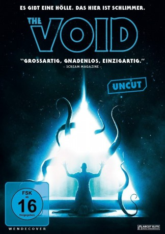
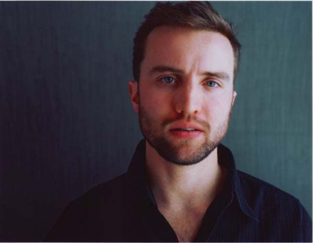
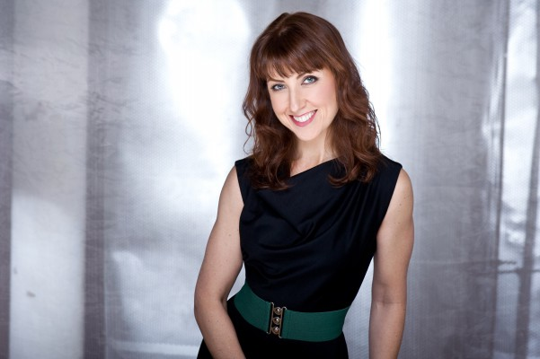

#6070 The Void
 
 IMDB-Wertung: 6.0 / 10
IMDB-Wertung: 6.0 / 10  Metascore: 0
Metascore: 0 
Die gemütliche Nachtschicht von Sheriff Carter (Aaron Poole) kommt zu einem jähen Ende, als ihm ein blutüberströmter Mann vor das Auto läuft. Carter bringt den Verletzten in ein nahe liegendes Krankenhaus, doch dadurch gerät die illustre Schar aus Angestellten und Patienten in große Gefahr. Plötzlich tauchen zwei mysteriöse Jäger auf, die den Tod des Mannes wollen, bewaffnete Kultisten, die jeden Fluchtversuch vereiteln und im Gebäude mutieren die ersten Opfer zu ekelhaften Schleimmonstern. Das Tor zur Hölle wurde aufgestoßen und Carter führt die Überlebenden bei ihrem Versuch, dem Horror zu entkommen, an.
Jahr: 2016
Dauer: 90 Minuten
FSK: 16
Land: Kanada Studio: Ascot Elite Entertainment GroupTonspuren: DD5.1 - ,
Untertitel: Deutsch,
Auflösung: 1080p (1920x808) Größe: 6963 MB
Genre: Horror, Sci-Fi, Mystery
Regisseur: Jeremy Gillespie, Steven Kostanski
Drehbuch: Matthew Jacobs
Soundtrack:
Darsteller:
-  Aaron Poole als Daniel Carter
 Kenneth Welsh als Dr. Richard Powell
Kenneth Welsh als Dr. Richard Powell- Daniel Fathers als The Father
- Kathleen Munroe als Allison Fraser
- Ellen Wong als Kim
- Mik Byskov als The Son
 Art Hindle als Mitchell
Art Hindle als Mitchell-  Stephanie Belding als Beverly
- James Millington als Ben
- Evan Stern als James
- Grace Munro als Maggie
- Trish Rainone als The Mother
- Chris Nash als Transformed Sarah
- Amy Groening als Dispatch
- Keith Bowser als Cult Member , uncredited
- Mark Fisher als Patchwork , uncredited
- Matthew Kennedy als Cliff Robertson
- David Scott als Transformed Powell
- Mackenzie Sawyer als Sarah Powell
- Jason Detheridge als Transformed Sarah
- Michael J. Walsh als Transformed Beverly
- Troy James als Sleepwalker
- Brad Storch als Disciple #1
- Betty Symington als Disciple #2
- Janine Davies als Cult Member
- Sloane McLauchlin als Baby Talk
Datei: X:\2016(N-Z)\Void, The (2016, FSK16, 1920x808).mkv seit 26.04.2017
Festplatte: HD 2016(A-Z)
 Es gibt insgesamt 182 Filme in der Gruppe '2016(N-Z)'
Es gibt insgesamt 182 Filme in der Gruppe '2016(N-Z)'